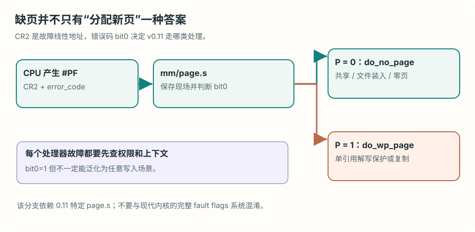
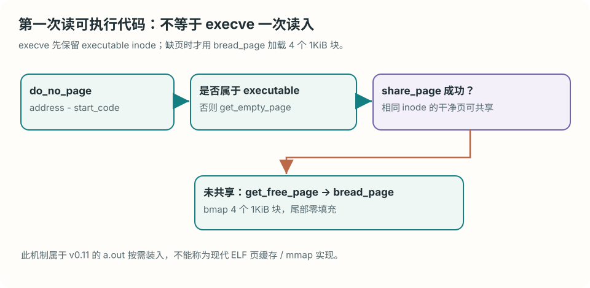

分页与缺页：写时复制、按需装入和 TLB 失效
从 10/10/12 位地址拆解开始，沿 mm/page.s → do_wp_page/do_no_page 追踪物理页、PTE 权限、可执行文件按需装入及共享。
#PF · COW · demand paging两个页错误：同样触发 #PF，修复过程完全不同
CPU 使用线性地址访问某页时，如果页表项的 Present 位为 0，会触发不存在页面的故障；如果页面存在但因只读保护而不允许这次写入，也会触发缺页保护异常。在 Linux 0.11 中，这两种情况分别指向 do_no_page 和 do_wp_page。

如果不分清两者，容易误以为“所有缺页都去分配一个新 4KiB 页”，甚至把 COW 写保护误当作真正的访问违规。0.11 的代码有非常具体的判断和历史安全边界。
先从线性地址算出 PDE、PTE 和页内偏移
80386 的 4KiB 分页将 32 位线性地址按 10+10+12 拆解：位 31–22 选页目录项，21–12 选页表项，11–0 选物理页内偏移。CR3 在 0.11 早期设置为 0，页目录从物理 0 地址开始。后续进程的用户 LDT 基址先参加分段地址转换，再将得到的线性地址送进页表查找。
linear = 0x08001234
pde = (linear >> 22) & 0x3ff # 32
pte = (linear >> 12) & 0x3ff # 1
offset = linear & 0xfff # 0x234
print(pde, pte, hex(offset))硬件查表时需要看到 PDE/PTE 都有效且权限允许，才能用 PTE 内的物理页框基址加上 0x234 得到真正的物理地址。因此教学示例只能解释索引，不能凭空给出最终的物理页号。
CPU 保存 CR2 和错误码，汇编入口负责分发
原版的 mm/page.s 是低级 #PF 入口 _page_fault。它保存必要寄存器、读取 CR2，取出 CPU 压入的错误码，按 Present bit 选择 _do_no_page 或 _do_wp_page，调用 C 层处理后恢复现场并 iret。CR2 是线性地址，不是页表项的物理页框地址。
address = read_cr2()
error = cpu_pushed_error_code
if (error & 1) == 0:
do_no_page(error, address)
else:
do_wp_page(error, address)
restore_registers_and_iret()错误码 bit1 和 bit2 可以提供操作类型/权限背景，但这里描述的是原版页故障汇编用 bit0 选择的实际控制分支。不能将“present=1 时进入 do_wp_page”机械推广成在现代内核里每种保护错误都可安全按写时复制处理。
CR2 保存的是故障页的物理地址吗？（展开核对）
不是。CR2 保存本次引起 #PF 的线性地址；内核还需通过 PDE/PTE 和物理页管理状态判断接下来的处理。
do_wp_page：什么时候可以直接变成可写？
un_wp_page 取得原 PTE 指向的物理页。如果该页位于受 mem_map 管理的区域，且引用计数恰好为 1，它只需将 PTE 的写权限位设回去并失效化 TLB，不必复制。
如果该页仍有多个引用，get_free_page() 申请新的 4KiB 页；原页 mem_map 引用数减 1，当前任务的 PTE 改为新页的物理地址并标记 present/可写，随后失效化 TLB、执行 copy_page(old_page,new_page)。低于 LOW_MEM 的共享映射不按相同的 mem_map 规则处理。
if (old_page >= LOW_MEM && mem_map[MAP_NR(old_page)]==1) {
*table_entry |= 2;
invalidate();
return;
}
/* 其他情况：申请新页并复制旧页 */调用 invalidate() 在该版本通过写 CR3 的方式让旧地址转换缓存失效。这里的 TLB 同步机制来自单处理器早期实现，不能套用现代多核 TLB shootdown 的全部操作。
do_no_page：空白页、共享页和可执行文件页
do_no_page 先将故障地址按 4KiB 对齐，再计算相对于 current->start_code 的偏移。如果没有正在执行的 inode，或者偏移超过已经初始化的数据尾部，就申请新的空白页并映射。
如果地址落在可执行映像中，先调用 share_page(tmp)，寻找共享相同 executable inode 的其他任务；仅在可用而且页面干净时复用对应物理页。共享失败再申请新页，用 bmap 找到映像对应的磁盘块，通过 bread_page 把最多四个 1KiB 块装到这一页，按需清零数据结尾之后的空间，再用 put_page 映射。

free_page_tables 必须处理整张页表与引用
释放用户地址空间时，free_page_tables(from,size) 要求起始地址按 4MiB 对齐；它遍历目标页目录项，逐个读取页表项，对存在的物理页执行 free_page，再释放页表本身所占的物理页，最后清掉页目录项并失效化转换缓存。释放页表不是等于把数据页全部直接置空闲：共享页仍由 mem_map 引用计数约束。
PAGE_SIZE = 4096
PTE_PER_TABLE = 1024
PDE_COVERAGE = PAGE_SIZE * PTE_PER_TABLE # 4MiB
assert (0x400000 % PDE_COVERAGE) == 0
assert (0x08000000 % PDE_COVERAGE) == 0如果两个进程共享同一物理页，第一个退出后该页立刻成为空闲吗？（展开核对）
不会。free_page_tables 最终会对共享页执行 free_page，使 mem_map 由 2 变 1；另一个进程仍保有引用。只有最后一份引用释放才回到 0。
跨四个源文件验证完整路径
grep -n '_page_fault\|_do_no_page\|_do_wp_page' mm/page.s
grep -n 'void do_wp_page\|void do_no_page\|void un_wp_page' mm/memory.c
grep -n 'share_page\|try_to_share\|bread_page\|free_page_tables' mm/memory.c
grep -n 'N_MAGIC\|ZMAGIC\|current->executable' fs/exec.c预期：页故障入口在汇编，按条件进入两个 C 函数；COW 与按需文件装入各有独立逻辑。这里能复核源码控制流和地址算术，不会声称我们已经用 QEMU 捕获到某次具体页故障或验证过性能。
源码证据与下一条依赖
- mm/page.s：#PF 汇编入口与 bit0 分支。
- mm/memory.c：do_no_page、do_wp_page、un_wp_page、share_page 和 free_page_tables。
- fs/exec.c：a.out、可执行文件 inode 和按需装入设计。
- fs/buffer.c：bread_page 实际读取 1KiB 块。
按需装入程序时，为什么可以不每次都重新访问磁盘？因为内核已经维护一套按设备号和逻辑块号索引的缓冲区。下一章将读懂它的两套链表、脏页规则和 I/O 等待。